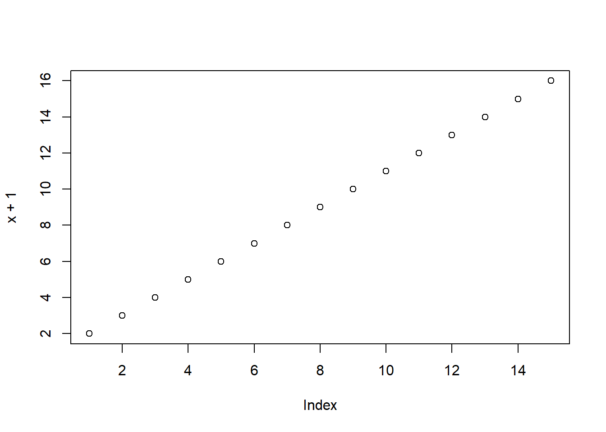

Código
vetor <- c(4.5, 5, 3.7, 8)
vetor[1] 4.5 5.0 3.7 8.0

Estatística e Probabilidade
Prof. Ben Dêivide (DEFIM/CAP/UFSJ)
Interpretação do curso de linguagem R ministrado pelo professor Ben Dêivide na disciplina de estatística e probabilidade.
Realizar um introdução ao R, fundamentado nas 8 primeiras aulas do curso R Básico 2024.
A linguagem R foi desenvolvida no ano de 1991 por Ross Ihaka e Robert Gentleman, professores da Universidade de Aukland,Nova Zelândia, como uma alternativa de código aberto para análise estatística e gráfica, buscando uma alternativa para a linguagem S. foi lançada em 1993 e no ano de 1995 tornou-se software livre. Sua rede de pacotes Cran (Comprehensive R Archive Network) foi lançada em 23 de abril de 1997.
O software utilizado no curso para interpretação da linguagem R foi o R.studio, desenvolvido no ano de 2009, por Joseph J. Allaire.
Precisamos primeiramente fazer o download da interface R no site R project e logo após, o download da interface do R studio no site da Posit, que interpretará através de comandos pré estabelecidos por funções e converterá a sintaxe da linguagem ao que foi almejado.Após o download de ambos, primeiro fazemos a instalação do R e logo após, a instalação do R Studio. É indicado um conhecimento prévio em linguagem R, seja por meio de um curso, ou vídeos, afim de uma melhor compreensão da sintaxe do R Studio. Uma vez o software R aberto no computador, pode se abrir o software R Studio, onde o painel de controle do software se divide em quatro quadrantes. A ordem padrão desses quadrantes são: 1º - Script do R: Onde as linhas de comando são expressas. 2º - Console do R: onde as linhas de comando são executadas e interpretadas. 3º - Ambiente global: Nessse quadrante estão localizadas as abas Environment, que mostra todos os objetos que estão criados, e History, que mostra todas as linhas de comando executadas no console. 4º - Área de plotagem: Nesse quadrante encontram-se 5 abas importantes dentro do R Studio: Files - Aba onde se encontram os arquivos do projeto, seja em extensão .qmd,.rmd,.html,área de imagens e logo, referências e estrutura da página ou do documento. Packages - Aba onde é possível instalar localmente pacotes do R disponíveis para uso livre. Help - Aba onde você encontra o manual de ajuda do R, você encontra informações sobre todas as funções e argumentos do R. Viewer - Aba onde você visualiza uma prévia projeto no formato desejado. Plots - Área de plotagem onde adicionamos imagens ou criamos gráficos e acrescentamos no documento.
Partindo do princípio que no R tudo é um objeto e que tudo em R é uma chamada de função, para se realizar um trabalho utilizando a linguagem R, dentro do R studio, na aba Console utilizamos comandos seja para chamar funções, seja para atribuir valores ao nosso “objeto”. Como no exemplo :
vetor <- c(4.5, 5, 3.7, 8)
vetor[1] 4.5 5.0 3.7 8.0Geralmente os comandos são atribuidos ao nosso objeto utilizando-se o <- como sinal de atribuição, tornando assim nosso objeto editável. Algumas regras para associação de nomes a objetos baseadas no livro Batista e Oliveira (2022):
Para armazenar as linhas de código no console, criamos um novo script, onde a extensão está dentro do arquivo de texto “Arquivo.R”. Para se criar um novo script, iremos na aba FILE/ARQUIVO > NEW FILE/NOVO ARQUIVO > R SCRIPT/R SCRIPT e digitamos nossas linhas de código. Utilizamos as teclas CTRL+ENTER para executar as linhas de comando. Utiliza-se caracteres especiais(*,$,&) em casos necessários, como impressão de um texto na tela e títulos de gráficos.
O local que o script está armazenado dentro da máquina se chama Diretório. Esse diretório guarda todo o projeto editado e executado, tais como linhas de comando, objetos associados, gráficos e imagens. Conseguimos alterar o local desse diretório gigitando o comando setwd(“Local desejado”) na aba Console.
Ao final de qualquer trabalho, quando clicamos no disquete salvar, a desejo do usuário dois arquivos são criados, o .RData que salva os objetos criados e o .Rhistory que salva todas as linhas de comando do diretório.
Objeto: Unidade dentro do R contendo informações com a capacidade de interpretar sua estrutura e conteúdo. Exemplo:
x <- 1:15
plot(x+1)
Para conhecermos os atributos do nosso objeto, utilizamos os seguintes comandos na aba Console:
Modo
mode(x)[1] "numeric"Tipo
typeof(x)[1] "integer"Tamanho
length(x)[1] 15Existem diversas outras funções para se determinar diversos atributos de objetos, exploradas no curso do professor Ben Dêivid.
A estrutura de dados relaciona a forma como declaramos o objeto no software (memória interna) com a forma como o objeto é apresentado pelo software para o usuário (memória externa), relação entre o Código e a Compilação:
x <- 1:12
x [1] 1 2 3 4 5 6 7 8 9 10 11 12is.vector(x)[1] TRUEis.matrix(x)[1] FALSEy <- matrix(1:12, 3, 4)
y [,1] [,2] [,3] [,4]
[1,] 1 4 7 10
[2,] 2 5 8 11
[3,] 3 6 9 12is.vector(y)[1] FALSEis.matrix(y)[1] TRUEAté o presente momento existem 24 tipos de objetos datados. Em resumo:
Objeto: É qualquer utensílio ou ingrediente que você nomeia (o “pote de sal”, a “geladeira”, a “receita”).
Estrutura de Dados: É o formato do recipiente. Um Vetor é como uma cartela de ovos (só cabe ovo).Um Data Frame é como uma prateleira organizada com etiquetas (cada coluna tem sua regra).Uma Lista é como uma caixa de mudança (você joga o que quiser dentro dela). Dica de ouro: No RStudio, sempre que quiser saber a estrutura de um objeto, use o comando str(nome_do_objeto). Ele te dará o “raio-x” completo da estrutura.
Finalizamos este curso com o domínio das ferramentas essenciais do R. graças à metodologia do Professor Ben Dêivide, saímos com uma base sólida em objetos, funções e lógica de scripts. Estamos prontos para aplicar esses conhecimentos em nossos projetos e continuar explorando o vasto ecossistema de pacotes que o R oferece para a pesquisa e o mercado. Recomendo tambem o curso de Documentaçao em R, também ministrado pelo professor Ben Dêivide, afim de conhecer a ferramenta Rmarkdown, essencial para melhor documentação, análise e interpretação estatística de dados dentro do R Studio.